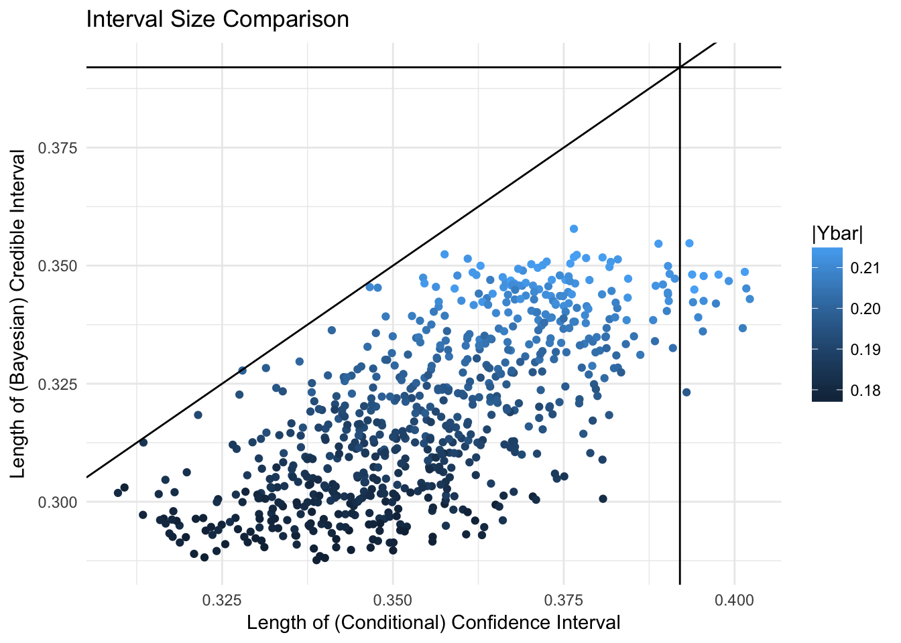

Chapter 3 Normal Simulation Study
This simulation study addresses on the first goal outlined in the introduction: if the data from one site is found to be significant, how can we report this discovery in a way that takes into account the winner’s curse?
3.1 Data Generation
To test the hypothesis \(H_0: \mu = 0\) versus \(H_1: \mu \neq 0\), a fixed proportion (set at 0.5) of null vs. alternative hypotheses are generated. For each hypothesis \(H_i\), let \(\mu_i = 0\) in the null scenario and \(\mu_i \sim \textsf{N}(0,1)\) in the alternative. The data \(Y_i\) is generated from a normal distribution with mean \(\mu_i\) and known variance 1, with sample size 100. If \(Y_i\) is not significant at \(\alpha = .05\), it is sampled again from the same distribution until the sufficient statistic is significant. This is done in order to properly compare the Bayesian approach with the conditional likelihood, which requires the data to be significant. The Bayes factor model as it is specified cannot be used in this scenario, since it only uses the p-value from the discovery site(s).
3.2 Conditional Likelihood
The credible intervals were estimated by treating the conditional likelihood as if it were a posterior distribution with an improper prior \(p(\mu) = 1\), and obtaining the HPD region covering 95%. Sampling was done through a Metropolis-Hastings algorithm.
3.3 Posterior Distribution
In the Bayesian case, the prior was set to the mixture model \(p(\mu|\xi) = (1-\xi ) \delta_0(\mu)+ \xi\phi(\mu)\). In this case, \(\xi = 0.5\) is a constant. Note that this is also the true data generating model.
The marginal posterior distribution is \(P(\mu | Y ) = P(H_0|Y)P(\mu|Y, H_0) + P(H_1|Y)P(\mu|Y, H_1)\). The separate posteriors for \(\mu\) are: \(P(\mu|Y, H_0) = \delta_0(\mu)\), \(P(\mu|Y, H_1) \sim \textsf{N}(\frac{n}{n+1}\bar Y, \frac{1}{n+1})\). The posterior for the alternative hypothesis can be calculated using its Bayes factor, BF and the prior odds, \(\pi = \frac{(1-\xi)}{\xi}\): \[P(H_1| Y ) = \frac{\pi BF}{1+\pi BF}\]. For this example, the prior odds are 1 (because the probability of \(H_1 = \xi = 0.5\)). The Bayes factor is \[BF = \frac{L(\bar Y | H_1)}{L(\bar Y | H_0)} = \sqrt{n+1}* e^{\frac{n^2}{2(n+1)}(\bar Y)^2}\] . This result comes from the fact that the marginal likelihood \(L(\bar Y | H_1) \sim \textsf{N}(0, \frac{n}{n+1})\).
Putting these pieces together results in the marginal posterior for \(\mu\), which can be used to generate samples to calculate credible intervals.
3.4 Results
3.4.1 Estimators
| Bayes.mean | Bayes.median | Bayes.mode | cond.mean | cond.mode | naive |
|---|---|---|---|---|---|
| 3.81 | 4.329 | 4.329 | 3.932 | 3.869 | 4.986 |
The conditional likelihood mode (i.e. MLE) has the smallest bias (absolute error) for \(\mu\) out of the frequentist estimators, while the Bayesian median and mode (which end up being the same) the smallest bias in the Bayesian framework. The RMSE for the Bayesian estimator (mean of the posterior) is the lowest, followed by the conditional mean and mode.
3.4.2 Credible and Confidence Intervals

The lines mark the \(y = x\) line, and the length of naive confidence intervals (which are constant for fixed number of samples) on the x and y axes.
The largest values for the significant statistic also correspond to the largest intervals in both cases. Note that the conditional likelihood credible intervals are almost always larger than the fully Bayesian credible intervals, but still mostly smaller than the naive ones.
3.4.3 Coverage
The marginal coverage of the conditional likelihood credible interval C is \[P(\mu \in C|Y) = P(\mu \in C|H_0) P(H_0|Y)+P(\mu \in C|H_1) P(H_1|Y)\] This will be significantly higher than .95 for the cases in which \(0 \in C\), since \(P(\mu \in C|H_1) =0.95\) by definition, and \(P(\mu \in C|H_0) = I_{0 \in C}\). In this experiment, the expected coverage is \(0.98\) for intervals with 0, and only \(0.38\) for those that do not contain 0.
However, conditioning on the alternative hypothesis does not lead to an empirical coverage of 95%.
We can see that both methods are still significantly better than the naive one.
| Unconditional Coverage | Coverage Conditional on H0 | Coverage Conditional on H1 | |
|---|---|---|---|
| naive | 0.657 | 0.624 | 0.745 |
| conditional | 0.881 | 1.000 | 0.571 |
| Bayesian | 0.882 | 1.000 | 0.577 |
3.4.4 Hypothesis Rejection
Due to the nature of p-values, an \(\alpha = 0.05\) corresponds to a marginal posterior probability \(P(H_1 | Y )\) of only \(0.4\) for \(N = 100\). This means that the 95% credible interval for \(\mu| Y\) will contain 0 every time. In terms of hypothesis testing, if we consider the strategy of rejecting the null when the interval does not contain 0, this level for \(\alpha\) leads to no rejections.
| Do not reject null | Reject null | |
|---|---|---|
| 0 | 0.272 | 0.45 |
| 1 | 0.137 | 0.14 |
| Do not reject null | |
|---|---|
| 0 | 0.722 |
| 1 | 0.278 |
| Do not reject null | |
|---|---|
| 0 | 0.722 |
| 1 | 0.278 |
Despite never rejecting the null, the conditional likelihood and the Bayesian methods both perform better than the naive one in terms of “predicting” accurately. The naive method is especially problematic in that it has a higher Type 1 error (false positives) than true positives OR true negatives in the region of the data.